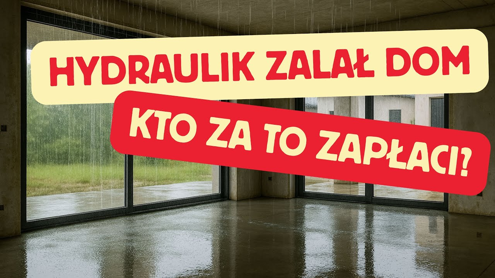
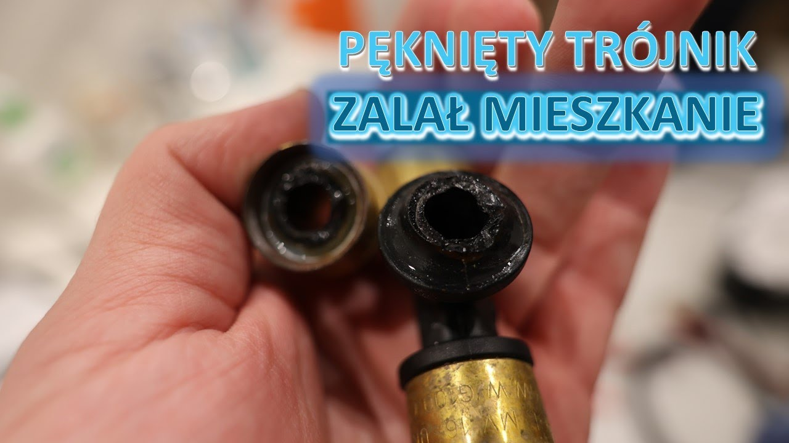
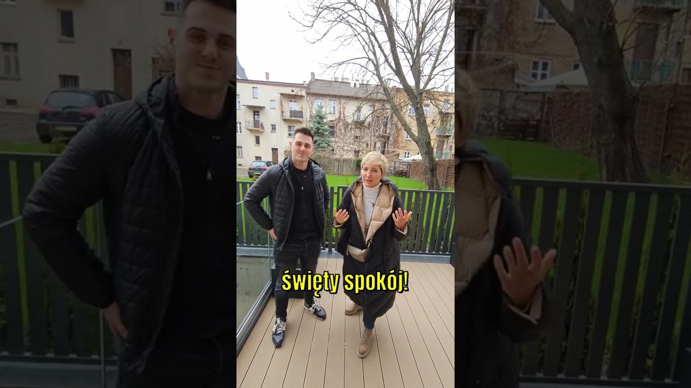

Gwiazdka na wodomierzu się kręci, choć wszystko zakręcone?
Twój wodomierz wskazuje podobnie? To najprawdopodobniej wyciek. Zadzwoń do nas – zajmiemy się tym.
Znajdziemy wyciek bez zbędnego kucia, osuszymy, wyremontujemy i rozliczymy szkodę z ubezpieczycielem. Woda już leje się z sufitu? Działamy tak samo – zadzwoń od razu.
Zarządzasz budynkiem albo wspólnotą? Zobacz, jak pracujemy z zarządcami
Sprawdź wodomierz w kilka minut
Prosty test, który zrobisz sam. Jeśli coś cię niepokoi, dzwoń – każde zlecenie zaczynamy od szczegółowego wywiadu, a potem od pomiarów.
-
Zakręć wszystko
Zakręć krany i wyłącz urządzenia, które pobierają wodę: pralkę, zmywarkę, spłuczkę.
-
Obserwuj licznik
Patrz na gwiazdkę i czerwone bębenki. Odczekaj kilka minut, najlepiej zapisz stan.
-
Coś się rusza? Dzwoń
Gdy gwiazdka się kręci albo stan się zmienił, woda gdzieś ucieka. Znajdziemy wyciek bez zbędnego kucia.
Wyciek potwierdzony. Co dalej robimy
-
Lokalizacja
Pomiary wilgotności, termowizja, próby ciśnieniowe, geofon, gaz znacznikowy. Kujemy tylko tam, gdzie wszystkie metody wskazują ten sam punkt.
zwykle kilka godzin
-
Osuszanie
Osuszacze kondensacyjne i adsorpcyjne, osuszanie podposadzkowe, wizyty z pomiarami – do wartości normowych, nie „na oko”.
od 2 dni do kilku tygodni
-
Remont
Hydroizolacja, wylewka, płytki, panele, sufity – u ciebie i u sąsiada, któremu przeciekło.
po osuszeniu
-
Ozonowanie
Usuwa zapach stęchlizny i drobnoustroje, także ze szczelin i spod paneli. Lokal jest wtedy pusty.
od kilku godzin do kilku dni
-
Rozliczenie
Na podstawie cesji rozliczamy się bezpośrednio z ubezpieczycielem, a zaniżonej wypłaty dochodzimy sami.
bez gotówki z góry
Nie zostajesz sam z ubezpieczycielem
Usługę zwykle da się rozliczyć z ubezpieczenia – z twojej polisy albo z OC sprawcy zalania. Zakres zależy od polisy, a formalnościami zajmujemy się my.
- CesjaPrzenosisz na nas prawo do odszkodowania za nasze prace – nie płacisz z góry.
- DokumentacjaProtokół, zdjęcia, raport z termowizji i kosztorys KNR, które ubezpieczyciel może zweryfikować.
- Rozliczenie i spórRozliczamy się bezpośrednio z ubezpieczycielem, a zaniżonej wypłaty dochodzimy sami.
Nie podpisuj ugody na początku likwidacji szkody. Zamyka drogę do dalszych roszczeń – na przykład za osuszanie albo meble, które zawilgły od tyłu.
| Pozycja | Kwota |
|---|---|
| Lokalizacja wycieku, 19 dób osuszania i pełny remont | 46 663,17 zł |
| w tym materiały | ok. 17 000 zł |
| VAT 8% od kwoty faktur | 3 733,05 zł |
| Wypłata ubezpieczyciela | 21 569,91 zł |
Różnica, której dochodzi LAKUS
25 093,26 zł
Klient mieszka już w wyremontowanym mieszkaniu. Spór o brakującą kwotę prowadzimy my. Źródło: realizacja opisana na blogu LAKUS, 02.2026.
Wodomierz główny pokazuje więcej niż suma mieszkań?
Rosnąca różnica między licznikiem budynku a licznikami w lokalach to często ukryty wyciek w pionach. Awaria w pionie rzadko kończy się na jednym mieszkaniu – na krakowskim osiedlu Złotych Orłów od 2017 roku zlokalizowaliśmy ponad 200 awarii, a około 150 mieszkań osuszyliśmy i wyremontowaliśmy.
- jeden punkt kontaktu dla zarządcy
- dokumentacja techniczna dla każdego lokalu
- rozliczenia z polis mieszkańców i wspólnoty
- Licznik główny budynku
- 1284 m³
- Suma 8 liczników w lokalach
- 1269 m³
- Różnica, której nie zużył żaden lokal
- 15 m³
Zakres prac
Każdą usługę możesz zamówić osobno, ale najczęściej prowadzimy szkodę od początku do końca.
- Lokalizacja wyciekówWoda użytkowa, kanalizacja, c.o., ogrzewanie podłogowe i instalacje w gruncie – bez zbędnego kucia.
- Osuszanie po zalaniuŚciany, stropy, posadzki i przestrzenie podposadzkowe – do wartości normowych, z pomiarami.
- Remont po zalaniuHydroizolacja, płytki, panele, malowanie i zabudowy – przywracamy stan sprzed szkody.
- OzonowanieZapach stęchlizny, bakterie i pleśń – na koniec prac, w pustym lokalu.
- Obsługa szkody z ubezpieczycielemZgłoszenie, cesja, dokumentacja, kosztorys KNR i spory o zaniżoną wypłatę.
Realizacje
Wszystkie realizacje-
Zdjęcie z realizacjiłazienka po remoncie, kadr poziomy
19 dób osuszania
Bronowice, Kraków
Zalanie w bloku: lokalizacja wycieku, osuszanie i pełny remont łazienki oraz podłóg. 2025.
-
Zdjęcie z realizacjikuchnia, technik z kamerą przy cokole
48 h od zgłoszenia do końca prac
Ruczaj, Kraków
Mikrowyciek przy zmywarce, ukryty za szafką, znaleziony kamerą termowizyjną. Zdemontowany tylko cokół. 2025.
-
Zdjęcie z realizacjiłazienka, pomiar wilgotności w narożniku
5 dni osuszania
Os. Złotego Wieku, Nowa Huta
Nieszczelne kolanko na rurze ciepłej wody. Termowizja, geofon, barwnik UV, osuszanie i ozonowanie. 2025.
-
Zdjęcie z realizacjibudynek, osuszacze w pracy
ponad 3 tygodnie osuszania
Wrocław
Wężyk do umywalki pękł w nocy, gdy nikogo nie było – woda lała się przez wiele godzin. Zimowe osuszanie budynku. 2026.
Co mówią klienci
PROFESJONALIZM od zalania do wyremontowania! To pierwsze co przychodzi mi do głowy. Firma Lakus uratowała moją firmę po bardzo dużym zalaniu. Jestem niezmiernie wdzięczna i gorąco polecam: osuszanie, remont, formalności – wszystko zrobione na najwyższym poziomie i w świetnej atmosferze.
Bardzo szybka realizacja usługi osuszania. Profesjonalne i bardzo indywidualne podejście do klienta. Firma w całości rozliczyła się z ubezpieczycielem, co było bardzo przydatnym rozwiązaniem. Polecam firmę!
Profesjonalne usługi, chłopaki podchodzą bardzo rzetelnie do sprawy. Wszystko zostało domknięte w przewidzianym przedziale czasowym. Gorące podziękowania zwłaszcza dla Pana Piotra i Pana Filipa.
Pięć gwiazdek to za mało! Szybki przyjazd, lokalizacja wycieku i od razu naprawa. Do tego bardzo fajne, życzliwe podejście do klienta. Bardzo dziękuję i mega polecam!
Opinie z dotychczasowej strony lakus.pl · źródło i ocena do potwierdzenia
Zobacz nas przy pracy

Hydraulik zalał dom – kto za to zapłaci?151 tys. wyświetleń
Zalanie mieszkania – co zrobić?39 tys. wyświetleń

Lokalizacja wycieku w nowym mieszkaniu2,8 tys. wyświetleń

Najlepszą reklamą jest zadowolony klient3,4 tys. wyświetleń
Najczęstsze pytania
Czy da się znaleźć wyciek bez kucia?
Zwykle tak. Łączymy kilka metod – pomiary wilgotności, termowizję, próby ciśnieniowe, geofon i gaz znacznikowy. Kujemy dopiero punktowo, gdy wszystkie wskazują to samo miejsce.
Czy ubezpieczenie pokryje lokalizację wycieku i osuszanie?
W większości przypadków tak – z twojej polisy albo z polisy OC sprawcy zalania. Zależy to od zakresu ubezpieczenia i limitów, dlatego sprawdzamy polisę przed rozpoczęciem prac. Wyjątkiem bywa na przykład przemarznięcie instalacji w nieogrzewanym domu.
Wodomierz stoi, a na ścianie jest wilgoć. Czy to może być wyciek?
Tak. Wodomierz nie pokaże wycieku z centralnego ogrzewania ani z kanalizacji, a bardzo małe nieszczelności potrafią go nie ruszyć. Wilgoć, plamy albo zapach stęchlizny to powód, żeby zrobić pomiary.
Zalał mnie sąsiad. Od czego zacząć?
Zrób zdjęcia i nagranie szkody, ustal z sąsiadem jego ubezpieczyciela i zadzwoń do nas. Najpierw trzeba ustalić przyczynę – bez tego ubezpieczyciel może zakwestionować roszczenie.
Czy podpisać ugodę, którą proponuje ubezpieczyciel?
Nie na początku. Ugoda zamyka drogę do dalszych roszczeń, a pełen koszt szkody często wychodzi dopiero w trakcie prac. Najpierw kosztorys, potem rozmowa o kwotach.
Ile trwa osuszanie?
Od dwóch dni przy drobnym wycieku do kilku tygodni, gdy woda weszła w konstrukcję budynku. O końcu decydują pomiary wilgotności, nie kalendarz.
Zgłoś szkodę
Najszybciej przez telefon. Możesz też zostawić zgłoszenie – oddzwonimy i umówimy wizytę.
Zadzwoń: 888 801 802Numer do potwierdzenia
- kontakt@lakus.com.pl
- Adres
- ul. Józefa Chełmońskiego 70B/3, 31-340 Kraków
- Obszar działania do potwierdzenia
- Kraków, Katowice, Wrocław, Częstochowa, Kielce, Rzeszów, Tarnów i okolice